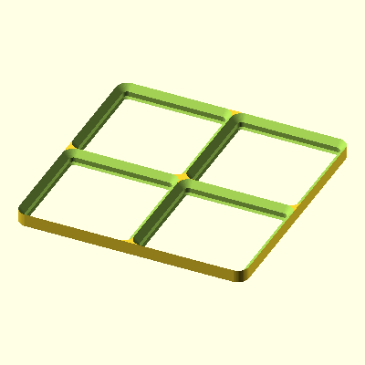

Default 2x2 GridFlock baseplate using derived plate size.
Default 2x2 GridFlock baseplate using derived plate size.
Set Values
{
"gridfinity_width": 2,
"gridfinity_depth": 2,
"pos": [
0,
0,
0
],
"rot": [
0,
0,
0
],
"type": "positive"
}Default Values
{
"gridfinity_width": 2,
"gridfinity_depth": 2,
"plate_size": "[84,84]",
"bed_size": "[250,220]",
"baseplate_dimensions": "[42,42]",
"magnets": false,
"magnet_style": 1,
"magnet_frame_style": 1,
"click": false,
"click_style": 1,
"connector_intersection_puzzle": true,
"intersection_puzzle_fit": 1,
"connector_edge_puzzle": false,
"edge_puzzle_count": 1,
"filler_x": 1,
"filler_y": 1,
"filler_fraction": "[2,2]",
"alignment": "[0.5,0.5]",
"numbering": true,
"bottom_chamfer": "[0,0,0,0]",
"top_chamfer": "[0,0,0,0]",
"plate_wall_thickness": "[0,0,0,0]",
"plate_wall_height": "[0,0]",
"vertical_screw_plate_corners": false,
"vertical_screw_segment_corners": false,
"vertical_screw_other": false,
"thumbscrews": false,
"x_segment_algorithm": 0,
"y_row_count_first": "[0,0]",
"x_column_count_first": 0,
"stacked_print": false,
"stacked_print_duplicates": 1,
"solid_base": 0,
"plate_corner_radius": 4,
"edge_adjust": "[0,0,0,0]",
"cell_override": "\"\"",
"top_slice": 0,
"pos": "[0,0,0]",
"rot": "[0,0,0]",
"type": "\"positive\""
}rule: Call `action()` and render the raw-SCAD payload directly.